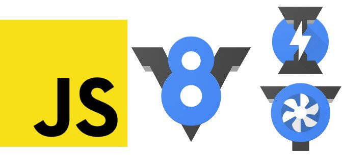
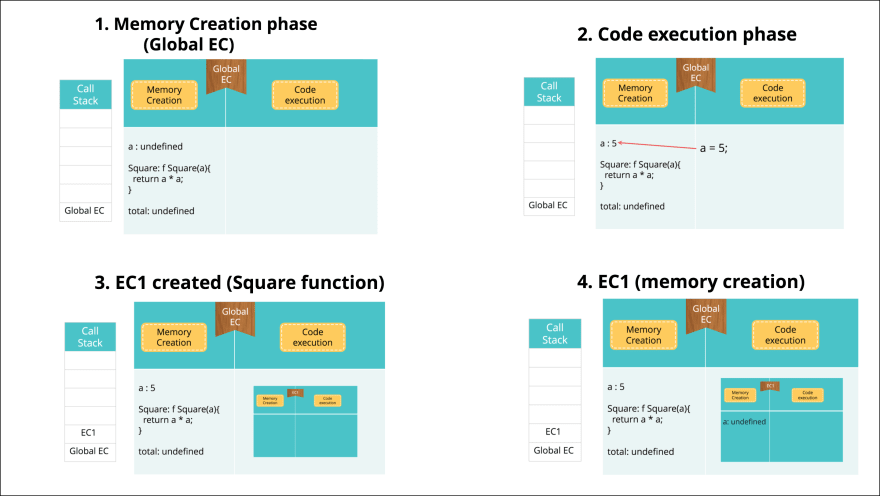
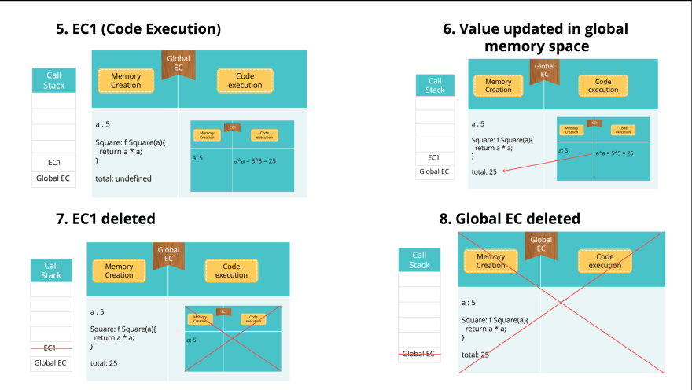

How does JavaScript work?
JavaScript Engines, such as V8 (Chrome Engine), are used by browsers to compile the code
we write into machine language, which allows us to then use it.
view the results.

Fig : 1 - V8 Engine
Fig : 2 - JavaScript optimization Through v8 engine
When using the JIT compiler inside the V8 engine, when
When JavaScript code is initially executed, a Global variable is created.
The Execution Context (Window Object) has two phases as well.
Loading, or memory generation, occurs first, and Js sets the
memory for variables (with unknown values, also known as
lifting) and activities (reference is created).When a function is called or invoked in
the Global execution, a new Function execution context is created just like the Global
and it also have the same two phase memory creation and execution. The second phase is
execution where Js again start the code from the first line and set all the value of
variables that were undefined in the first phase. When the function's internal code has
finished running, it will disappear and JS will return to the global environment to
continue running the remaining code. Finally, when there is nothing left to execute,
global execution will end.


Fig : 3 - The way JavaScript works
JavaScript processes these call stack execution contexts using a stack data structure
(LIFO). Where the main or global execution is the First in then the function execution
context is placed, after a function execution is finished it popped out from the stack.
Finally, the program terminates when no further functions are being executed because the
Global has likewise been popped out from there.